Home / Past papers / MLT Quiz 2 / this paper
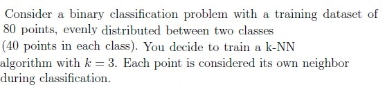
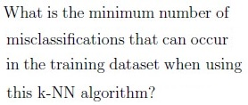
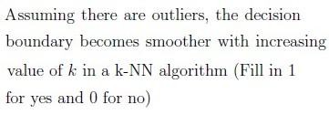
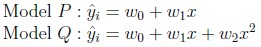
Consider a regression problem where you are tasked with predicting the sale prices of houses based on their square footage. You decide to experiment with two different models: The training dataset consists of information on 200 houses, and you use the models to make predictions on a test dataset of 50 houses. The Mean Squared Error (MSE) is chosen as the evaluation metric. Based on the above data, answer the given subquestions.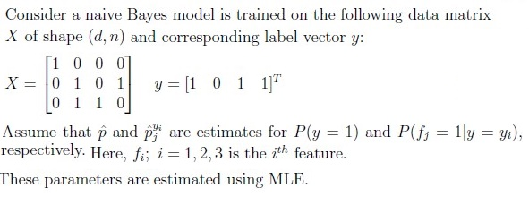
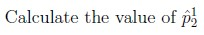
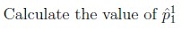
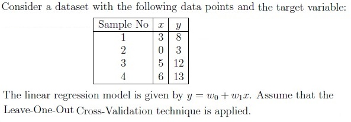
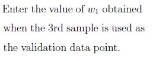
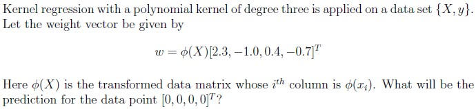
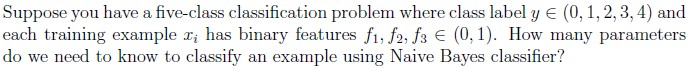
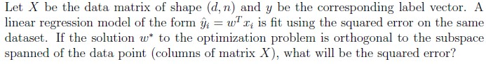
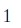
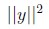
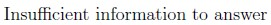
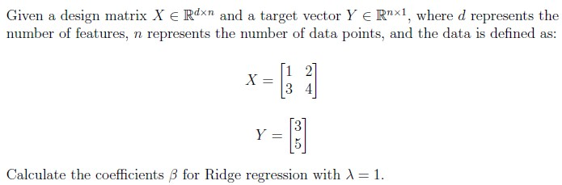
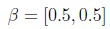
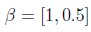
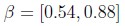
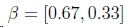
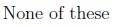
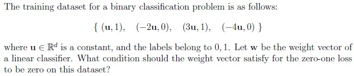
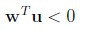
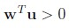
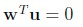
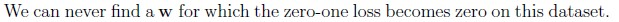
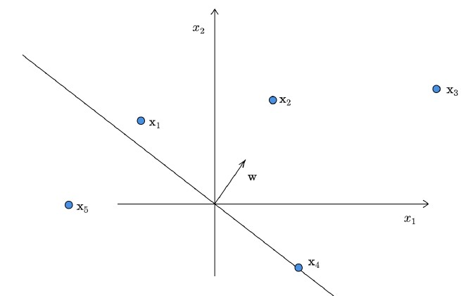
Consider the following data-points in a binary classification problem. w is the weight vector corresponding to a linear classifier. The labels are +1 and −1. Which of the following statements are true?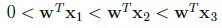
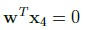
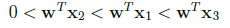
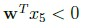
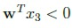
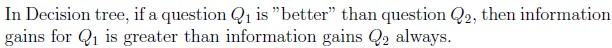
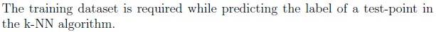
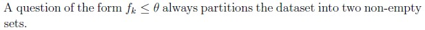
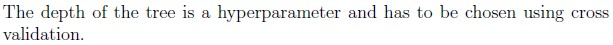
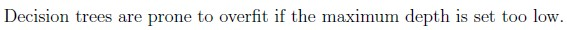